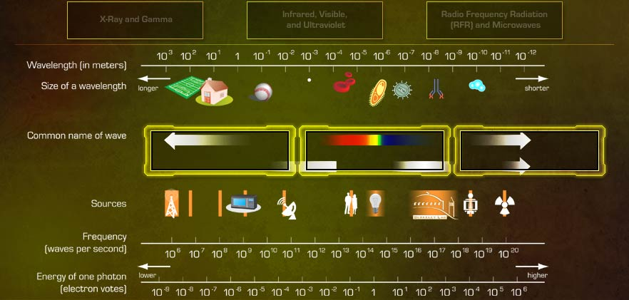

<%@LANGUAGE="JAVASCRIPT" CODEPAGE="1252"%>
<!DOCTYPE html PUBLIC "-//W3C//DTD XHTML 1.0 Transitional//EN" "http://www.w3.org/TR/xhtml1/DTD/xhtml1-transitional.dtd">
<html xmlns="http://www.w3.org/1999/xhtml"><!-- InstanceBegin template="/Templates/besa.dwt" codeOutsideHTMLIsLocked="false" -->
<head>
<meta http-equiv="Content-Type" content="text/html; charset=iso-8859-1" />
<!-- InstanceBeginEditable name="doctitle" -->
<title>BESA WBT</title>
<!-- InstanceEndEditable -->
<meta http-equiv="Content-Type" content="text/html; charset=iso-8859-1">
<link rel="stylesheet" type="text/css" href="../../besa.css" title = "besaCSS">

<script language="JavaScript" type="text/JavaScript" src="../../scripts/APIWrapper.js"></script>
<script language="JavaScript" type="text/JavaScript" src="../../scripts/SCOFunctions.js"></script>
<script language="JavaScript" type="text/javascript" src="../../scripts/jquery.js" ></script>
<script language="JavaScript" type="text/JavaScript" src="../../scripts/access.js"></script>
<script language="JavaScript" type="text/JavaScript" src="../../scripts/besa.js"></script>
<script language="JavaScript" type="text/JavaScript" src="../../scripts/shadowbox.js"></script>

<script language="javascript">
if (typeof(blnTut) == "undefined")  {
	initializePage();
}

function popConfirm(){
	if (confirm("Do you wish to exit this unit?")==true) exitCourse(true);
}
</script>
<!-- InstanceBeginEditable name="head" -->
<style>
#Content { width:870px; }
</style>
<script type="text/javascript" src="../../scripts/DD.js" ></script>
<script language="JavaScript" type="text/javascript">
<!--
// Initialization
var nObj = 3;
var arrPopup = new Array(4)

arrPopup[0] = "Before proceeding you must complete the question.";
arrPopup[1] = "Correct!  Radio Frequency Radiation (RFR) and microwave energy are located at the lower end of the electromagnetic spectrum.  These forms of energy, which have longer wavelengths and are less penetrating than other forms, are primarily used for communications.  They can also be used for weather surveillance, search and detection radar, remote control devices, and radio astronomy.<br /><br/>Infrared, visible, and ultraviolet radiation are located in the middle range of the electromagnetic spectrum.  Sources of these forms of radiation include food warmers, visible light, paint drying lamps, and sunlamps.<br /><br/>X-ray and gamma radiation are located at the higher end of the electromagnetic spectrum.  They produce the highest amount of energy, are the most penetrating, and are referred to as the ionizing portion of the electromagnetic spectrum.  Select Forward to continue.";
arrPopup[2] = "Incorrect.  The correct answers are now displayed. Radio Frequency Radiation (RFR) and microwave energy are located at the lower end of the electromagnetic spectrum.  These forms of energy, which have longer wavelengths and are less penetrating than other forms, are primarily used for communications.  They can also be used for weather surveillance, search and detection radar, remote control devices, and radio astronomy.<br /><br/>Infrared, visible, and ultraviolet radiation are located in the middle range of the electromagnetic spectrum.  Sources of these forms of radiation include food warmers, visible light, paint drying lamps, and sunlamps.<br /><br/>X-ray and gamma radiation are located at the higher end of the electromagnetic spectrum.  They produce the highest amount of energy, are the most penetrating, and are referred to as the ionizing portion of the electromagnetic spectrum. Select Forward to continue.";
arrPopup[3]  = "Incorrect.  Recall that when comparing radiation on the electromagnetic spectrum, it's important to note how the changes in wavelength or energy and frequency impact the radiation emitted.  Please try again.";


function onpage() {
	distrload(nObj);
	initDD();
}

function showaudiot() {
}

function findNext() {
	var pgURL = "1rov060.html"
	goURL(pgURL);
}

function findBack() {
	var pgURL = "1rov040.html"
	goURL(pgURL);
}

function showaudiot() {
}

function showFdbk(strTemp) {
	//customize the feedback box size and position
	if (userTries >= tryLimit) {
		document.getElementById('lyfdbk').style.height = "76px";
		document.getElementById('lyfdbk').style.top = "510px";
	}
	document.getElementById('lyfdbk').innerHTML = strTemp;
	if (strTemp=="") {
		document.getElementById('lyfdbk').style.visibility = "hidden";
		if(document.getElementById('feedback')!=null) document.getElementById('feedback').style.visibility = "hidden";
		document.getElementById('done').style.visibility = "visible";
	} else {
		document.getElementById('lyfdbk').style.visibility = "visible";
		if(document.getElementById('feedback')!=null) document.getElementById('feedback').style.visibility = "visible";
		document.getElementById('done').style.visibility = "hidden";
	}
}
function MM_preloadImages() { //v3.0
  var d=document; if(d.images){ if(!d.MM_p) d.MM_p=new Array();
    var i,j=d.MM_p.length,a=MM_preloadImages.arguments; for(i=0; i<a.length; i++)
    if (a[i].indexOf("#")!=0){ d.MM_p[j]=new Image; d.MM_p[j++].src=a[i];}}
}

function MM_swapImgRestore() { //v3.0
  var i,x,a=document.MM_sr; for(i=0;a&&i<a.length&&(x=a[i])&&x.oSrc;i++) x.src=x.oSrc;
}

function MM_findObj(n, d) { //v4.01
  var p,i,x;  if(!d) d=document; if((p=n.indexOf("?"))>0&&parent.frames.length) {
    d=parent.frames[n.substring(p+1)].document; n=n.substring(0,p);}
  if(!(x=d[n])&&d.all) x=d.all[n]; for (i=0;!x&&i<d.forms.length;i++) x=d.forms[i][n];
  for(i=0;!x&&d.layers&&i<d.layers.length;i++) x=MM_findObj(n,d.layers[i].document);
  if(!x && d.getElementById) x=d.getElementById(n); return x;
}

function MM_swapImage() { //v3.0
  var i,j=0,x,a=MM_swapImage.arguments; document.MM_sr=new Array; for(i=0;i<(a.length-2);i+=3)
   if ((x=MM_findObj(a[i]))!=null){document.MM_sr[j++]=x; if(!x.oSrc) x.oSrc=x.src; x.src=a[i+2];}
}
//-->
</script>
<!-- InstanceEndEditable -->
</head>

<body onLoad=" onpage();MM_preloadImages('../../sysimages/done_2.jpg')" onUnload="if (closing) exitCourse(false)">
<div id="Banner"></div>
<div id="TopicH" ><!-- InstanceBeginEditable name="EditModuleT" --> 
  Radiation Overview / Principles of Radiation
<!-- InstanceEndEditable --></div>
<div id="pageN"><!-- InstanceBeginEditable name="EditPageN" -->Page 5 of 10<!-- InstanceEndEditable --></div>

<div id="PageT"><!-- InstanceBeginEditable name="pageT" -->Appraisal<!-- InstanceEndEditable --></div>
<div id="AudioIcon"><!-- InstanceBeginEditable name="audioIcon" --><!-- InstanceEndEditable --></div>
<div id="Content" ><!-- InstanceBeginEditable name="EditContents" -->
  <p>Drag each form of  radiation to the appropriate location on the electromagnetic spectrum. </p>
<!-- InstanceEndEditable --></div>

<!-- InstanceBeginEditable name="others" -->
<div id="targetHoder" style="position:absolute; top:169px; left:44px; width:200px; height:200px;"></div>

<!--=============== Target position =================-->
<div id="target3" style="position:absolute; top:355px; left:692px; width:195px; height:58px; z-index:1;"></div>

<div id="target1" style="position:absolute; top:355px; left:258px; width:193px; height:55px; z-index:3;"></div>
<div id="target2" style="position:absolute; top:355px; left:475px; width:194px; height:55px; z-index:4;"></div>


<!--=========== Drag items positon ===========-->
<div id="drag1" style="position:absolute; top:172px; left:643px; width:40px; height:40px;"></div>
<div id="drag2" style="position:absolute; top:172px; left:391px; width:40px; height:40px;"></div>
<div id="drag3" style="position:absolute; top:172px; left:139px; width:40px; height:40px;"></div>


<!-- *********** Done Button ************** -->
<div id="done" style="position:absolute; left:828px; top:541px; z-index:2;"><a href="javascript:;" onClick="judgeInteraction()" onMouseOver="MM_swapImage('btnDone','','../../sysimages/done_2.jpg',1)" onMouseOut="MM_swapImgRestore()"></a></div>

<!-- *********** Feedback Layer *************** -->
<div class="txtfdbk" id='lyfdbk' style="position:absolute; left:73px; top:532px; width:836px; height:52px; visibility:hidden; z-index:10; overflow-y:auto;"></div>

<div id="snowMapDot" style="position:absolute; top:20px; left:745px;">

</div>
<!-- InstanceEndEditable -->
<div id="Prompt"><!-- InstanceBeginEditable name="EditPrompt" -->Drag  the types of radiation to the correct location, and then click Done.<!-- InstanceEndEditable --></div>
<div id="Next"><a href="javascript:findNext();" onMouseOver="MM_swapImage('btnNext','','../../sysimages/forward_2.jpg',1)" onMouseOut="MM_swapImgRestore()"></a></div> 

<div id="Repeat" ><a href="javascript:refresh()"  onMouseOver="MM_swapImage('btnRepeat','','../../sysimages/repeat_2.jpg',1)" onMouseOut="MM_swapImgRestore()"></a></div>

<div id="Back"><a href="javascript:findBack();" onMouseOver="MM_swapImage('btnBack','','../../sysimages/previous_2.jpg',1)" onMouseOut="MM_swapImgRestore()"></a></div>
</body>

<div id="lynav">
      <ul id="navigation">

        <!-- InstanceBeginEditable name="maps" -->
		
		<!-- InstanceEndEditable -->
		<li class="unitmenu"><a href="javascript:toMenu(false)" title="Lesson Menu"></a></li>
        <li class="unitmap"><a href="lesson_map.html?TB_iframe=true&amp;width=352&amp;height=451" class="thickbox" title="Lesson Map"></a></li>
		<li class="options"><a href="#" title="Options Menu"></a></li>
			<ul id="optionslist" >
				<li class="help"><a href="../../BESA_Help.pdf" target="_blank" title="Help" ></a></li>
				<li class="audioT"><a href="javascript:showaudiot()" title="Audio Transcript"></a></li>
				<li class="glossary"><a href="../../glossary.html?TB_iframe=true&#038; " class="thickbox" title="Glossary" ></a></li>
				<li class="contactInf"><a href="javascript:goURL('../resources.html')" title="Resources"></a></li>
  			</ul>
        <li class="exit"><a href="javascript:popConfirm()" title="Exit Course"></a></li>
      </ul>
</div>

<!-- InstanceEnd --></html>
